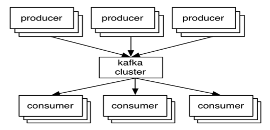

Building Modern Data Pipelines
James Ward | @_JamesWard
Platform Evangelist @ Salesforce.com
Distributed Systems

Modern Data Pipeline
Modern Data Pipelines
- Stream (or Flow) of Events (or Messages)
- Decoupled Producers and Consumers
- Batch & Streaming Analytics
- Big Data Storage
- Machine Learning
- Maybe CQRS / Event Sourcing
Challenges
- Reliability
- Partitioning
- Guaranteed Delivery
- Variable Speed Producers & Consumers
Kafka Fundamentals

- Event Stream - Distributed & Redundant
- Messaging System Semantics
- Clustering is Core
- Durability & Ordering Guarantees
Records
- Name, Value, Timestamp
- Immutable
- Append Only
- Persisted
AKA: A Log
Producers & Consumers

- Broker = Node in the cluster
- Producer writes records to a broker
- Consumer reads records from a broker
- Leader / Follower for cluster distribution
Topics & Partitions

- Topic = Logical name with 1 or more partitions
- Partitions are replicated
- Ordering is guaranteed for a partition
Offsets

- Unique sequential ID (per partition)
- Consumers track offsets
- Benefits: Replay, Different Speed Consumers, etc
Heroku Uses Heroku Kafka
Akka Streams

- Impl of Reactive Streams
- Source / Sink Stream Programming
- Back-pressure, etc
- Kafka Adapter:
https://github.com/akka/reactive-kafka
Play Framework

- Built on Reactive Streams
- Stateless
- Scala & Java
Flink

- Streaming Dataflow Engine
- Data transformations: filter, aggregate, windows, etc
- High throughput & Low Latency
- Stream & Batch
- Kafka Adapter
Spark Streaming
- Micro-Batch Dataflow Engine
- Data transformations: filter, aggregate, windows, etc
- Kafka Adapter
Cassandra
- Big Data
- NoSQL
- Spark Streaming Adapter
The Uber Example
- Producers: Driver & Rider Location
- Driver needs Rider Location (and vise versa)
- Big Data store for all events
- Partition based on location
- Windowed Computations: Driver ETA per passenger & location
- Batch Analytics: Wait time accuracy
- Machine Learning: Demand Prediction
Demo Time!
Code!
https://github.com/jamesward/kooberQuestions?
Reach out: @_JamesWard